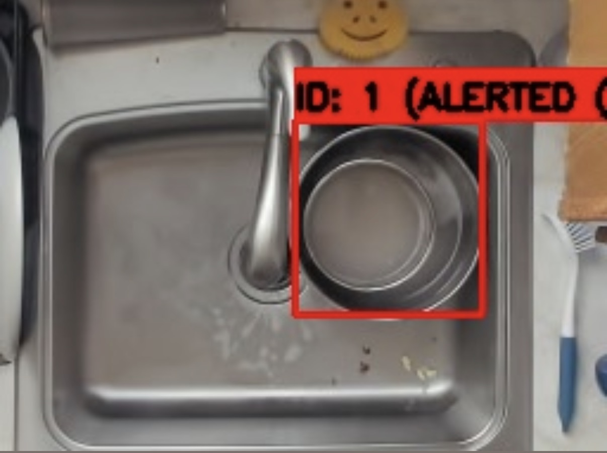
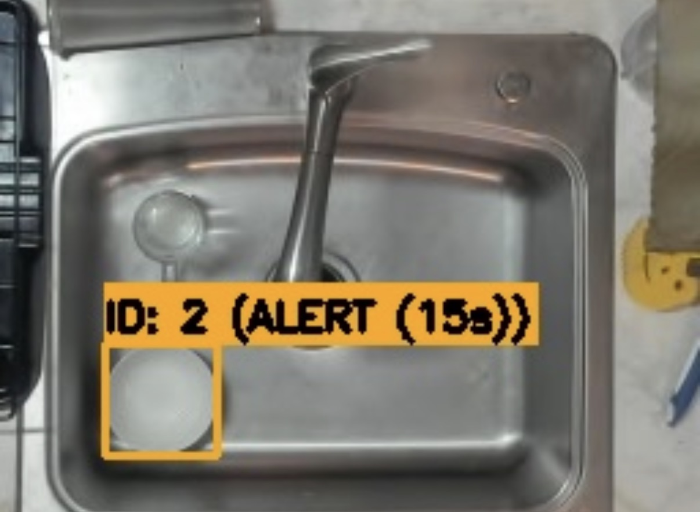

An automated roommate accountability system that uses computer vision to detect when dishes are left in the sink and identify who left them — then logs and displays the results on a web dashboard. The system combines a custom-trained YOLOv8/NCNN dish detection model with OpenCV face recognition, running on a Raspberry Pi 4 with two cameras.
| # | Item | Description | Qty |
|---|---|---|---|
| 1 | Raspberry Pi 4 | Main compute board running all software | 1 |
| 2 | Logitech Brio | 4K webcam used as the face recognition camera | 1 |
| 3 | Small USB Camera | Compact USB camera for dish detection at the sink | 1 |
The application is built around a unified Flask server that runs both camera pipelines concurrently.
| Script | Description |
|---|---|
app.py | Flask server, dual camera loop, dish-to-face association logic |
dish_tracker.py | YOLOv8/NCNN inference, IoU-based tracking, stationary detection |
face_recognizer.py | OpenCV LBPH face detection and recognition |
database.py | SQLite event storage and query operations |
media_cleanup.py | Auto-deletes snapshots older than 7 days |
The face recognition pipeline uses OpenCV's LBPH (Local Binary Pattern Histograms) algorithm with Haar Cascade detection. Before deployment, face images are captured per person using capture_faces_opencv.py and the model is trained with train_faces_opencv.py, producing face_recognizer.xml. 8–10 photos per person are recommended for reliable accuracy.
During operation, the face camera runs recognition every 3rd frame. Faces are labeled with a green bounding box if recognized or red if unknown.
The Flask dashboard is accessible on the local network at http://dish-bot.local:5000.
| URL | Page |
|---|---|
/ | Live dual-camera dashboard |
/history | Detection history with pagination |
/api/recent_events | Last 10 events (JSON) |
/api/daily_stats/YYYY-MM-DD | Daily dish count by person (JSON) |
| Color | Meaning |
|---|---|
| Blue | Dish is moving |
| Yellow | Dish is stationary, waiting |
| Orange | Dish stationary 15s+ — ready for association |
| Green | Dish associated with a person |